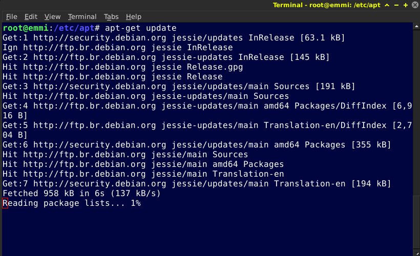

Primeiros passos
Alteração dos espelhos na Emmi
A Emmi já vem com os espelhos totalmente configurados e pronto para rodar, porém fica seu critério adicionar ou anular alguns espelhos.
Vamos ao passo a passo, primeiramente abra o terminal, logue como root e digite:
# nano /etc/apt/sources.list
Para deixar um link nulo adicione # na frente do link.
Saia do editor pressione CTRL+X
Atualizando o Sistema
Após feito isso vamos atualizar o sistema, para garantir toda segurança e pacotes atualizados.Vamos rodar os seguintes comandos:
# apt-get update
# apt-get upgrade
Este procedimento pode demorar dependendo da velocidade da sua internet.

Ajustando o Horário
Para ajustar o horário podemos fazer isto via gráfico, porém é mais rápido fazer isto via terminal.Vamos abrir o terminal entrar como root e rodamos o seguinte comando:
# dpkg-reconfigure tzdata
Uma janela se abrirá com alguns continentes como (Africa, America, Antarctica) e assim por diante, selecionamos America e precionamos enter

Use o direcional até achar a localidade, em nosso caso vamos utilizar São Paulo
.
Se tudo ocorreu bem a seguinte mensagem será exibida no terminal: